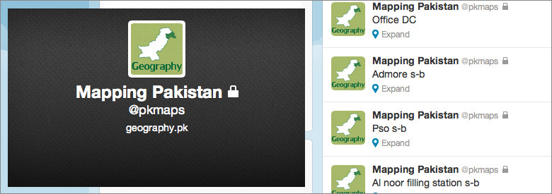
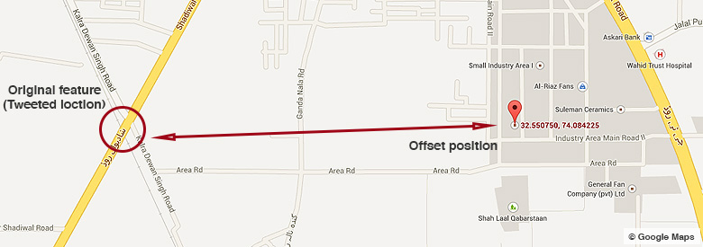
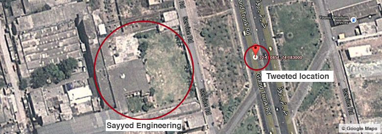

Tweet to map Pakistan – Case Study / Experiment
In 2011, I setup a private Twitter handler @pkmaps for an experiment by collecting and using the location information through Tweet in order to map the features at Google Map Maker that I would come across during my usual daily journeys to nearby towns. While I was in Pakistan, I used the handler to post the locations I passed by during said short trips. The method was simple. Write the feature name in tweet, enable location and post tweet. I also posted about this experiment to mapping forums and asked if anyone likes to join in. Some of fellow passionate mappers joined in.
@pkmaps experimental Twitter handler
I was using iPhone 3GS to tweet with Warid Telecom Edge data plan. First problem was the GPS hardware. It was quick to find out that satellite connections are not quick enough for GPS hardware in a mobile phone. It takes time to find your exact location and so on. Unless a location detectable application is running, it may not load the current location at all. Due to this, many tweets actually provided location information with vast offset to original location of the feature spanning over few hundred meters as these tweets were posted while the mobile GPS was still locating the exact position.
Poor GPS connection tweeted location with few hundred meters offset [Feature: [Level Crossing](https://twitter.com/pkmaps/status/73226351213150208)]
Once the location information is settled with better connection to satellites, there is another issue. Since these tweets were sent out while I was moving on a vehicle, their specific location still remains incorrect because none of the subject is located in middle of the road as the tweet suggests from its location information.
For this particular issue, I decided to use a format so to save as much and as accurate information about features. The format includes the name of the feature with my moving direction. So an earlier tweet having information “Sayyed Engineering” became “Sayyed Engineering – North bound” or “Sayyed Engineering n-b”. The idea of using the moving direction was after considering that all the features are always on left hand side of the road so when moving North bound then only tweeting about the features located on left hand side and vice versa.
Satisfactory result of tweeting the more accurate location for a feature
Now, next phase was to involve other people (non-mappers) in this experimental efforts so while keeping the handler private, idea was to ask limited number of followers to tweet the features with locations to @pkmaps. This way, mappers connected at this account would be able to map the tweeted feature by non-mapper contributors which were landing in mention section of the account.
The overall outcome of experiment was satisfactory. This gave a huge help in mapping many road side features that otherwise may not be possible for mappers like me with local knowledge limited to specific areas only. Also it covers a bit of absence of a mobile application for Google Map Maker. Apart from above mentioned issues, other limitations are availability of GPS enabled mobile phone, battery consumption due to continues use of GPS and mobile data during such an activity.